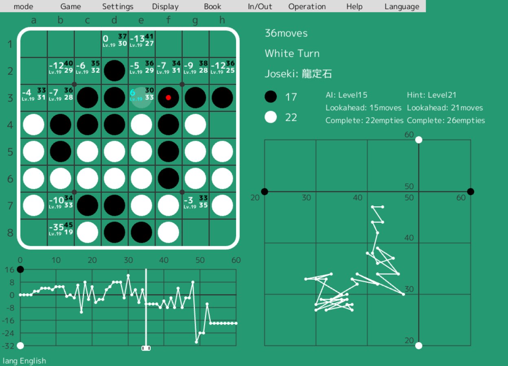

Egaroucid
World's strongest Othello AI (2021-)
Egaroucid is a othello AI from scratch, and a othello learning software in which the othello AI calculates.

Othello AI
Egaroucid 6 Light is the strongest othello AI in a contest, CodinGame Othello as of 2022/08/15.
You can play against this othello AI here.
Software for othello players
I built a much stronger AI, Egaroucid 5, and released a software for othello players.
This AI has more accurate evaluation function and faster search algorithm with parallel calculation with CPU. I used Negascout as a main algorithm, YBWC for parallel calculation.
I will develop an algorithm to use GPUs in othello AI.